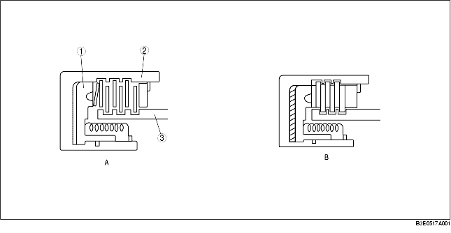
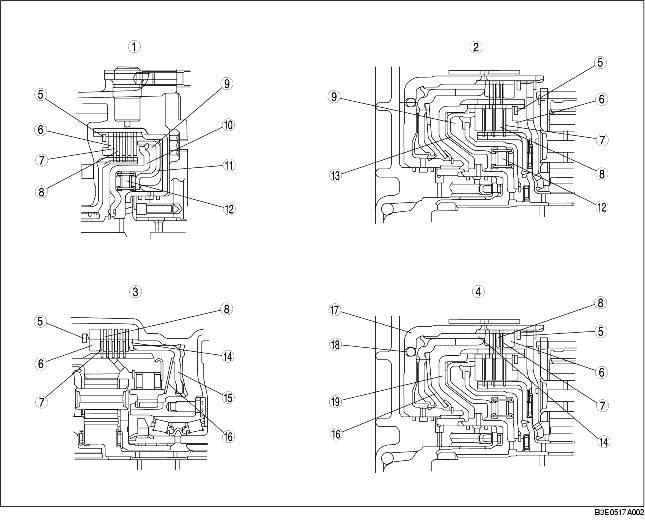

• Der grundlegende Aufbau ist aus der nachfolgenden Abbildung ersichtlich. In Abbildung A befindet sich Automatikgetriebeöl zwischen den Kupplungsscheiben (Innen- und Außenlamellenscheiben) und die Kraft wird wegen des Schlupfs zwischen den Scheiben nicht übertragen. Abbildung B zeigt die Kupplung, wenn Hydraulikdruck auf den Kolben wirkt. Die Außen- und Innenlamellenscheiben werden zusammengedrückt und übertragen die Drehbewegung der Kupplungstrommel auf die Kupplungsnabe. Wenn der Hydraulikdruck auf den Kolben beendet wird, werden die Kupplungsscheiben durch die Rückstellfeder getrennt und es herrscht wieder der Zustand von Abbildung A.

.
• Die Flanschscheiben der Rückwärtsgangkupplung und der 1./Rückwärtsgangbremse reduzieren den Ruck, der durch das plötzliche Einrücken der Kupplung entsteht. Die Kolbenrückschlagkugel in der 2-4 Bremstrommel (Rückwärtsgangkupplung) lässt das Getriebeöl nur im Freilauf ablaufen, um zu verhindern, dass sich der Hydraulikdruck so weit aufbaut, dass die Kupplungen schleifen, weil noch restliches Getriebeöl vorhanden ist. In der Vorwärtskupplung und 3-4 Kupplung befindet sich die Zentrifugal-Ausgleichskammer gegenüber der normalen Kupplungskammer. Die Zentrifugal-Ausgleichskammer ist immer mit Getriebeöl der eigenen Schmierpassage der Turbinenwelle gefüllt.

.